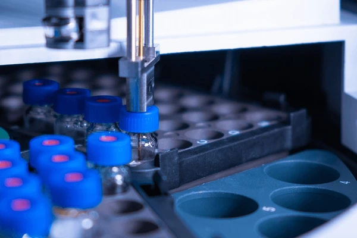
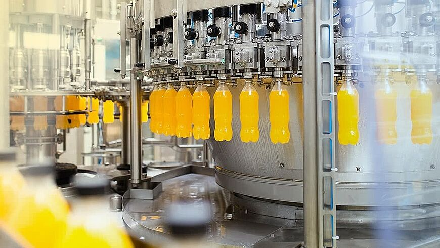
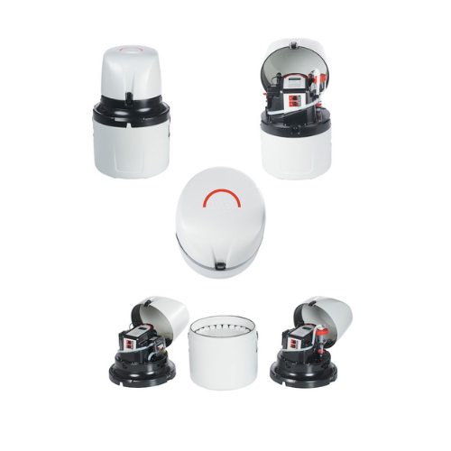

Welcome to Agua Instruments' Auto Sampler page. Our Automatic Sampling System is designed to revolutionize sample collection and analysis in various industries. Utilizing cutting-edge Precision Sampling Technology, our Laboratory Auto Sampler and Industrial Sampling Solutions ensure accurate and reliable Sample Collection Automation. With our advanced Automated Sample Analysis systems, you can achieve seamless Real-Time Sampling and efficient Sample Preparation Automation.

Our Auto Samplers use advanced technology for precise and reliable sample collection.
We offer tailored Automatic Sampling Systems to meet the specific needs of various industries.
From installation to maintenance, we provide comprehensive support services to ensure effective operation.
Our solutions are competitively priced, ensuring you receive the best value without compromising on quality.
Our systems are designed for ease of use and durability, ensuring long-term reliability.
Use Air and Water Samplers to collect and analyze environmental samples for pollution detection and control.
Automate sample collection in manufacturing, chemical processing, and other industrial applications to ensure product quality.
Enhance research capabilities with Laboratory Auto Samplers that provide consistent and accurate sample data.
Automate sampling and analysis processes in pharmaceutical manufacturing to ensure compliance and quality control.

Monitor and ensure the quality and safety of products with precise sampling and analysis.
